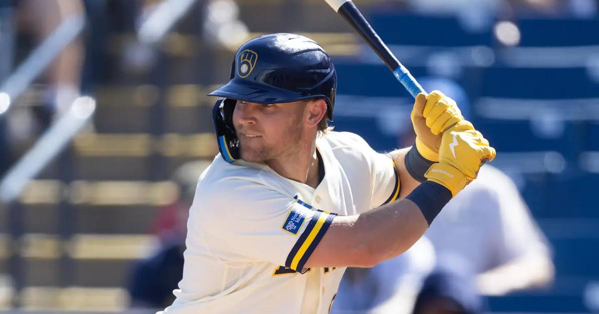

Jake Bauers is a Red Sox — Boston lands the Brewers' slugger on a four-year, $58 million deal
The Red Sox have their first big bat of the winter: Jake Bauers, the Brewers' leading home run hitter and NLCS MVP, is coming to Boston on a four-year, $58 million deal, per ESPN's Jeff Passan.

Disclosure: this post contains affiliate links. I earn a commission on qualifying purchases.
The deal
First baseman Jake Bauers and the Boston Red Sox have agreed to a four-year, $58 million contract, per ESPN's Jeff Passan, who broke the news on Friday. It is the first major position-player signing of the winter, and it lands Boston the power bat it has been hunting since the offseason opened. Bauers turned 31 in October.
The Red Sox moved fast, and for good reason — the market for proven middle-of-the-order bats is thin, and Bauers just put together the best season of his career on the biggest stage in the sport.
The breakout year
2026 was the best season of Bauers' career, and it was not close. Playing for Milwaukee, he set career highs across the board and finished as the Brewers' leading home run hitter.
Slash line: .266/.389/.484
Home runs: 26
RBIs: 86
OPS+: 140
WAR: 3.3
The on-base number is the one that jumps off the page. A .389 OBP from a first baseman with that kind of power is a rare combination, and it is a big reason the price climbed into the range it did. This was not a one-month hot streak — it was a full season of production from a player who, two years ago, was thinking about walking away from baseball entirely.
The October run
Then came the postseason, where Bauers went from breakout regular-season story to October legend. He was named NLCS MVP after Milwaukee's four-game sweep of the Dodgers, hitting .286/.412/.571 in the series with six RBIs.
The at-bats told the story better than the line did. In Game 2 he ground through a 12-pitch battle with Yoshinobu Yamamoto, drawing a bases-loaded walk. In Game 3 he worked Blake Snell for 11 pitches before launching a go-ahead home run into the right-field seats. Those are the kinds of at-bats that wear down an entire pitching staff, and the Dodgers never recovered.
The sweep sent Milwaukee to its first World Series appearance since 1982, and the Brewers finished the job by beating the Rays 4-1 for the first championship in franchise history. Bauers was right in the middle of all of it.
What he brings to Boston
Boston's lineup was missing exactly this. The Sox finished 12th in the American League in home runs last season, and the front office made adding a middle-of-the-lineup hitter its offseason priority. Bauers fills the first-base power slot with a bat that gets on base, hits for power, and has now proven it plays in October.
The qualifying-offer wrinkle
One cost beyond the contract itself: Bauers received a $23.15 million qualifying offer from the Brewers, and he will turn it down to take the Boston deal. Milwaukee receives draft-pick compensation as a result.
Watch
Source: Brewers' Jake Bauers was NAILS all NLCS on way to MVP! (Clutch ABs, 6 RBIs) — MLB. Bauers' biggest at-bats from the NLCS sweep of the Dodgers, the series that earned him MVP honors.
Sources
• Red Sox sign Jake Bauers — MLB Trade Rumors
• Red Sox sign Jake Bauers: contract, Brewers stats — Fox Sports
• Report: Red Sox, Bauers agree to 4-year, $58M contract — theScore
• Jake Bauers, Red Sox Reportedly Agree to Contract After World Series Run — Bleacher Report
Gear up: Fanatics